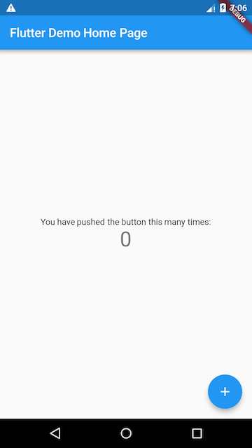

2.1 计数器应用示例
用 Android Studio 和 VS Code 创建的 Flutter 应用模板默认是一个简单的计数器示例。本节先仔细讲解一下这个计数器 Demo 的源码，让读者对 Flutter 应用程序结构有个基本了解，然后在随后的小节中将会基于此示例，一步一步添加一些新的功能来介绍 Flutter 应用的其他概念与技术。
对于接下来的示例，希望读者可以跟着笔者一起亲自动手来写一下，这样不仅可以加深印象，而且也会对介绍的概念与技术有一个真切的体会。如果你还不是很熟悉 Dart 语言或者没有移动开发经验，不用担心，只要你熟悉面向对象和基本编程概念（如变量、循环和条件控制），则可以完成本示例。
2.1.1 创建Flutter应用模板
1. 创建应用
通过 Android Studio 或 VS Code 创建一个新的 Flutter 工程，命名为 "first_flutter_app"。创建好后，就会得到一个默认的计数器应用示例。
注意，默认计数器示例可能随着编辑器 Flutter 插件的版本变化而变化，本例中会介绍计数器示例的全部代码，所以不会对本示例产生影响。
我们先运行创建的工程，效果如图2-1所示：

该计数器示例中，每点击一次右下角带“+”号的悬浮按钮，屏幕中央的数字就会加1。
在这个示例中，主要Dart代码是在 lib/main.dart 文件中，下面是它的源码：
class MyApp extends StatelessWidget {
@override
Widget build(BuildContext context) {
return MaterialApp(
title: 'Flutter Demo',
theme: ThemeData(
primarySwatch: Colors.blue,
),
home: MyHomePage(title: 'Flutter Demo Home Page'),
);
}
}
class MyHomePage extends StatefulWidget {
MyHomePage({Key? key, required this.title}) : super(key: key);
final String title;
@override
_MyHomePageState createState() => _MyHomePageState();
}
class _MyHomePageState extends State<MyHomePage> {
int _counter = 0;
void _incrementCounter() {
setState(() {
_counter++;
});
}
@override
Widget build(BuildContext context) {
return Scaffold(
appBar: AppBar(
title: Text(widget.title),
),
body: Center(
child: Column(
mainAxisAlignment: MainAxisAlignment.center,
children: <Widget>[
Text('You have pushed the button this many times:'),
Text(
'$_counter',
style: Theme.of(context).textTheme.headline4,
),
],
),
),
floatingActionButton: FloatingActionButton(
onPressed: _incrementCounter,
tooltip: 'Increment',
child: Icon(Icons.add),
), // This trailing comma makes auto-formatting nicer for build methods.
);
}
}
2. 模板代码分析
下面我们分析一下生成的代码：
1）导入包
import 'package:flutter/material.dart';
此行代码作用是导入了 Material UI 组件库。Material 是一种标准的移动端和web端的视觉设计语言， Flutter 默认提供了一套丰富的 Material 风格的UI组件。
2）应用入口
void main() => runApp(MyApp());
-
与 C/C++、Java 类似，Flutter 应用中
main函数为应用程序的入口。main函数中调用了runApp方法，它的功能是启动Flutter应用。runApp它接受一个Widget参数，在本示例中它是一个MyApp对象，MyApp()是 Flutter 应用的根组件。读者现在只需知道 runApp 是 Flutter 应用的入口即可，关于 Flutter 应用的启动流程，我们会在本书后面原理篇中做详细介绍。
-
main函数使用了(=>)符号，这是 Dart 中单行函数或方法的简写。
3）应用结构
class MyApp extends StatelessWidget {
@override
Widget build(BuildContext context) {
return MaterialApp(
//应用名称
title: 'Flutter Demo',
theme: ThemeData(
//蓝色主题
primarySwatch: Colors.blue,
),
//应用首页路由
home: MyHomePage(title: 'Flutter Demo Home Page'),
);
}
}
-
MyApp类代表 Flutter 应用，它继承了StatelessWidget类，这也就意味着应用本身也是一个widget。 -
在 Flutter 中，大多数东西都是 widget（后同“组件”或“部件”），包括对齐（Align）、填充（Padding）、手势处理（GestureDetector）等，它们都是以 widget 的形式提供。
-
Flutter 在构建页面时，会调用组件的
build方法，widget 的主要工作是提供一个 build() 方法来描述如何构建 UI 界面（通常是通过组合、拼装其他基础 widget ）。 -
MaterialApp是Material 库中提供的 Flutter APP 框架，通过它可以设置应用的名称、主题、语言、首页及路由列表等。MaterialApp也是一个 widget。 -
home为 Flutter 应用的首页，它也是一个 widget。
2.1.2 首页
1. 初识Widget
class MyHomePage extends StatefulWidget {
MyHomePage({Key? key, required this.title}) : super(key: key);
final String title;
@override
_MyHomePageState createState() => _MyHomePageState();
}
class _MyHomePageState extends State<MyHomePage> {
...
}
MyHomePage 是应用的首页，它继承自StatefulWidget类，表示它是一个有状态的组件（Stateful widget）。关于 Stateful widget 我们将在 “2.2Widget简介” 一节仔细介绍，现在我们只需简单认为有状态的组件（Stateful widget） 和无状态的组件（Stateless widget）有两点不同：
-
Stateful widget 可以拥有状态，这些状态在 widget 生命周期中是可以变的，而 Stateless widget 是不可变的。
-
Stateful widget 至少由两个类组成：
- 一个
StatefulWidget类。 - 一个
State类；StatefulWidget类本身是不变的，但是State类中持有的状态在 widget 生命周期中可能会发生变化。
_MyHomePageState类是MyHomePage类对应的状态类。看到这里，读者可能已经发现：和MyApp类不同，MyHomePage类中并没有build方法，取而代之的是，build方法被挪到了_MyHomePageState方法中，至于为什么这么做，先留个疑问，在分析完完整代码后再来解答。 - 一个
3. State类
1) _MyHomePageState 类解析
接下来，我们看看_MyHomePageState中都包含哪些东西：
-
组件的状态。
由于我们只需要维护一个点击次数计数器，所以定义一个
_counter状态：int _counter = 0; //用于记录按钮点击的总次数_counter为保存屏幕右下角带“+”号按钮点击次数的状态。 -
设置状态的自增函数。
void _incrementCounter() { setState(() { _counter++; }); }当按钮点击时，会调用此函数，该函数的作用是先自增
_counter，然后调用setState方法。setState方法的作用是通知 Flutter 框架，有状态发生了改变，Flutter 框架收到通知后，会执行build方法来根据新的状态重新构建界面， Flutter 对此方法做了优化，使重新执行变的很快，所以你可以重新构建任何需要更新的东西，而无需分别去修改各个 widget。 -
构建UI界面的
build方法构建UI界面的逻辑在
build方法中，当MyHomePage第一次创建时，_MyHomePageState类会被创建，当初始化完成后，Flutter框架会调用 widget 的build方法来构建 widget 树，最终将 widget 树渲染到设备屏幕上。所以，我们看看_MyHomePageState的build方法中都干了什么事：Widget build(BuildContext context) { return Scaffold( appBar: AppBar( title: Text(widget.title), ), body: Center( child: Column( mainAxisAlignment: MainAxisAlignment.center, children: <Widget>[ Text('You have pushed the button this many times:'), Text( '$_counter', style: Theme.of(context).textTheme.headline4, ), ], ), ), floatingActionButton: FloatingActionButton( onPressed: _incrementCounter, tooltip: 'Increment', child: Icon(Icons.add), ), ); }Scaffold是 Material 库中提供的页面脚手架，它提供了默认的导航栏、标题和包含主屏幕 widget 树（后同“组件树”或“部件树”）的body属性，组件树可以很复杂。本书后面示例中，路由默认都是通过Scaffold创建。body的组件树中包含了一个Center组件，Center可以将其子组件树对齐到屏幕中心。此例中，Center子组件是一个Column组件，Column的作用是将其所有子组件沿屏幕垂直方向依次排列； 此例中Column子组件是两个Text，第一个Text显示固定文本 “You have pushed the button this many times:”，第二个Text显示_counter状态的数值。floatingActionButton是页面右下角的带“+”的悬浮按钮，它的onPressed属性接受一个回调函数，代表它被点击后的处理器，本例中直接将_incrementCounter方法作为其处理函数。
现在，我们将整个计数器执行流程串起来：当右下角的floatingActionButton按钮被点击之后，会调用_incrementCounter方法。在_incrementCounter方法中，首先会自增_counter计数器（状态），然后setState会通知 Flutter 框架状态发生变化，接着，Flutter 框架会调用build方法以新的状态重新构建UI，最终显示在设备屏幕上。
2）为什么要将 build 方法放在 State 中，而不是放在StatefulWidget中？
现在，我们回答之前提出的问题，为什么build()方法放在State（而不是StatefulWidget）中 ？这主要是为了提高开发的灵活性。如果将build()方法放在StatefulWidget中则会有两个问题：
- 状态访问不便。
试想一下，如果我们的StatefulWidget有很多状态，而每次状态改变都要调用build方法，由于状态是保存在 State 中的，如果build方法在StatefulWidget中，那么build方法和状态分别在两个类中，那么构建时读取状态将会很不方便！试想一下，如果真的将build方法放在 StatefulWidget 中的话，由于构建用户界面过程需要依赖 State，所以build方法将必须加一个State参数，大概是下面这样：
Widget build(BuildContext context, State state){
//state.counter
...
}
这样的话就只能将State的所有状态声明为公开的状态，这样才能在State类外部访问状态！但是，将状态设置为公开后，状态将不再具有私密性，这就会导致对状态的修改将会变的不可控。但如果将build()方法放在State中的话，构建过程不仅可以直接访问状态，而且也无需公开私有状态，这会非常方便。
- 继承
StatefulWidget不便。
例如，Flutter 中有一个动画 widget 的基类AnimatedWidget，它继承自StatefulWidget类。AnimatedWidget中引入了一个抽象方法build(BuildContext context)，继承自AnimatedWidget的动画 widget 都要实现这个build方法。现在设想一下，如果StatefulWidget 类中已经有了一个build方法，正如上面所述，此时build方法需要接收一个 State 对象，这就意味着AnimatedWidget必须将自己的 State 对象(记为_animatedWidgetState)提供给其子类，因为子类需要在其build方法中调用父类的build方法，代码可能如下：
class MyAnimationWidget extends AnimatedWidget{
@override
Widget build(BuildContext context, State state){
//由于子类要用到AnimatedWidget的状态对象_animatedWidgetState，
//所以AnimatedWidget必须通过某种方式将其状态对象_animatedWidgetState
//暴露给其子类
super.build(context, _animatedWidgetState)
}
}
这样很显然是不合理的，因为
-
AnimatedWidget的状态对象是AnimatedWidget内部实现细节，不应该暴露给外部。 -
如果要将父类状态暴露给子类，那么必须得有一种传递机制，而做这一套传递机制是无意义的，因为父子类之间状态的传递和子类本身逻辑是无关的。
综上所述，可以发现，对于StatefulWidget，将build方法放在 State 中，可以给开发带来很大的灵活性。